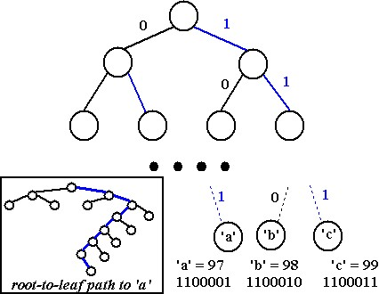
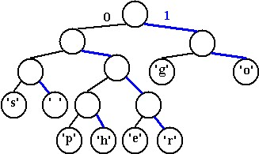
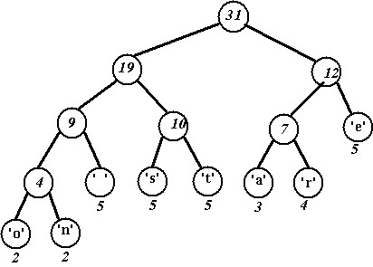

Many programming languages use ASCII coding for characters (ASCII stands for American Standard Code for Information Interchange). Some recent languages, e.g., Java, use UNICODE which, because it can encode a bigger set of characters, is more useful for languages like Japanese and Chinese which have a larger set of characters than are used in English.
We'll use ASCII encoding of characters as an example. In ASCII, every character is encoded with the same number of bits: 8 bits per character. Since there are 256 different values that can be encoded with 8 bits, there are potentially 256 different characters in the ASCII character set. The common characters, e.g., alphanumeric characters, punctuation, control characters, etc., use only 7 bits; there are 128 different characters that can be encoded with 7 bits. In C++ for example, the type char is divided into subtypes unsigned-char and (the default signed) char. As we'll see, Huffman coding compresses data by using fewer bits to encode more frequently occurring characters so that not all characters are encoded with 8 bits. In Java there are no unsigned types and char values use 16 bits (Unicode compared to ASCII). Substantial compression results regardless of the character-encoding used by a language or platform.
We'll look at how the string "go go gophers" is encoded in ASCII, how we might save bits using a simpler coding scheme, and how Huffman coding is used to compress the data resulting in still more savings.
With an ASCII encoding (8 bits per character) the 13 character string "go go gophers" requires 104 bits. The table below on the left shows how the coding works.
| ASCII coding | 3-bit coding | |||||||||||||||||||||||||||||||||||||||||||||||||||||||
|---|---|---|---|---|---|---|---|---|---|---|---|---|---|---|---|---|---|---|---|---|---|---|---|---|---|---|---|---|---|---|---|---|---|---|---|---|---|---|---|---|---|---|---|---|---|---|---|---|---|---|---|---|---|---|---|---|
|
|
The string "go go gophers" would be written (coded numerically) as 103 111 32 103 111 32 103 111 112 104 101 114 115. Although not easily readable by humans, this would be written as the following stream of bits (the spaces would not be written, just the 0's and 1's)
1100111 1101111 1100000 1100111 1101111 1000000 1100111 1101111 1110000 1101000 1100101 1110010 1110011
Since there are only eight different characters in "go go gophers", it's possible to use only 3 bits to encode the different characters. We might, for example, use the encoding in the table on the right above, though other 3-bit encodings are possible.
Now the string "go go gophers" would be encoded as 0 1 7 0 1 7 0 1 2 3 4 5 6 or, as bits:
000 001 111 000 001 111 000 001 010 011 100 101 110 111
By using three bits per character, the string "go go gophers" uses a total of 39 bits instead of 104 bits. More bits can be saved if we use fewer than three bits to encode characters like g, o, and space that occur frequently and more than three bits to encode characters like e, p, h, r, and s that occur less frequently in "go go gophers". This is the basic idea behind Huffman coding: to use fewer bits for more frequently occurring characters. We'll see how this is done using a tree that stores characters at the leaves, and whose root-to-leaf paths provide the bit sequence used to encode the characters.
|
Using a tree (actually a binary trie, more on that later) all characters are stored at the leaves of a complete tree. In the diagram to the right, the tree has eight levels meaning that the root-to-leaf path always has seven edges. A left-edge (black in the diagram) is numbered 0, a right-edge (blue in the diagram) is numbered 1. The ASCII code for any character/leaf is obtained by following the root-to-leaf path and catening the 0's and 1's. For example, the character 'a', which has ASCII value 97 (1100001 in binary), is shown with root-to-leaf path of right-right-left-left-left-left-right. |  |
The structure of the tree can be used to determine the coding of any leaf by using the 0/1 edge convention described. If we use a different tree, we get a different coding. As an example, the tree below on the right yields the coding shown on the left.
|
 |
Using this coding, "go go gophers" is encoded (spaces wouldn't appear in the bitstream) as:
10 11 001 10 11 001 10 11 0100 0101 0110 0111 000
This is a total of 37 bits, which saves two bits from the encoding in which each of the 8 characters has a 3-bit encoding that is shown above! The bits are saved by coding frequently occurring characters like 'g' and 'o' with fewer bits (here two bits) than characters that occur less frequently like 'p', 'h', 'e', and 'r'.
The character-encoding induced by the tree can be used to decode a stream of bits as well as encode a string into a stream of bits. You can try to decode the following bitstream; the answer with an explanation follows:
01010110011100100001000101011001110110001101101100000010101 011001110110
To decode the stream, start at the root of the encoding tree, and follow a left-branch for a 0, a right branch for a 1. When you reach a leaf, write the character stored at the leaf, and start again at the top of the tree. To start, the bits are 010101100111. This yields left-right-left-right to the letter 'h', followed (starting again at the root) with left-right-right-left to the letter 'e', followed by left-right-right-right to the letter 'r'. Continuing until all the bits are processed yields
When all characters are stored in leaves, and every interior/(non-leaf) node has two children, the coding induced by the 0/1 convention outlined above has what is called the prefix property: no bit-sequence encoding of a character is the prefix of any other bit-sequence encoding. This makes it possible to decode a bitstream using the coding tree by following root-to-leaf paths. The tree shown above for "go go gophers" is an optimal tree: there are no other trees with the same characters that use fewer bits to encode the string "go go gophers". There are other trees that use 37 bits; for example you can simply swap any sibling nodes and get a different encoding that uses the same number of bits. We need an algorithm for constructing an optimal tree which in turn yields a minimal per-character encoding/compression. This algorithm is called Huffman coding, and was invented by D. Huffman in 1952. It is an example of a greedy algorithm.
We'll use Huffman's algorithm to construct a tree that is used for data compression. In the previous section we saw examples of how a stream of bits can be generated from an encoding, e.g., how "go go gophers" was written as 1011001101100110110100010101100111000. We also saw how the tree can be used to decode a stream of bits. We'll discuss how to construct the tree here.
We'll assume that each character has an associated weight equal to the number of times the character occurs in a file, for example. In the "go go gophers" example, the characters 'g' and 'o' have weight 3, the space has weight 2, and the other characters have weight 1. When compressing a file we'll need to calculate these weights, we'll ignore this step for now and assume that all character weights have been calculated. Huffman's algorithm assumes that we're building a single tree from a group (or forest) of trees. Initially, all the trees have a single node with a character and the character's weight. Trees are combined by picking two trees, and making a new tree from the two trees. This decreases the number of trees by one at each step since two trees are combined into one tree. The algorithm is as follows:
Repeat this step until there is only one tree:
Choose two trees with the smallest weights, call these trees T1 and T2. Create a new tree whose root has a weight equal to the sum of the weights T1 + T2 and whose left subtree is T1 and whose right subtree is T2.
We'll use the string "go go gophers" as an example. Initially we have the forest shown below. The nodes are shown with a weight/count that represents the number of times the node's character occurs.
We pick two minimal nodes. There are five nodes with the minimal weight of one, it doesn't matter which two we pick. In a program, the deterministic aspects of the program will dictate which two are chosen, e.g., the first two in an array, or the elements returned by a priority queue implementation. We create a new tree whose root is weighted by the sum of the weights chosen. We now have a forest of seven trees as shown here:
Choosing two minimal trees yields another tree with weight two as shown below. There are now six trees in the forest of trees that will eventually build an encoding tree.
Again we must choose the two trees of minimal weight. The lowest weight is the 'e'-node/tree with weight equal to one. There are three trees with weight two, we can choose any of these to create a new tree whose weight will be three.
Now there are two trees with weight equal to two. These are joined into a new tree whose weight is four. There are four trees left, one whose weight is four and three with a weight of three.
Two minimal (three weight) trees are joined into a tree whose weight is six. In the diagram below we choose the 'g' and 'o' trees (we could have chosen the 'g' tree and the space-'e' tree or the 'o' tree and the space-'e' tree.) There are three trees left.
The minimal trees have weights of three and four, these are joined into a tree whose weight is seven leaving two trees.
Finally, the last two trees are joined into a final tree whose weight is thirteen, the sum of the two weights six and seven. Note that this tree is different from the tree we used to illustrate Huffman coding above, and the bit patterns for each character are different, but the total number of bits used to encode "go go gophers" is the same.
The character encoding induced by the last tree is shown below where again, 0 is used for left edges and 1 for right edges.
| char | binary |
|---|---|
| 'g' | 00 |
| 'o' | 01 |
| 'p' | 1110 |
| 'h' | 1101 |
| 'e' | 101 |
| 'r' | 1111 |
| 's' | 1100 |
| ' ' | 100 |
The string "go go gophers" would be encoded as shown (with spaces used for easier reading, the spaces wouldn't appear in the real encoding).
00 01 100 00 01 100 00 01 1110 1101 101 1111 1100
Once again, 37 bits are used to encode "go go gophers". There are several trees that yield an optimal 37-bit encoding of "go go gophers". The tree that actually results from a programmed implementation of Huffman's algorithm will be the same each time the program is run for the same weights (assuming no randomness is used in creating the tree).
Huffman's algorithm is an example of a greedy algorithm. It's called greedy because the two smallest nodes are chosen at each step, and this local decision results in a globally optimal encoding tree. In general, greedy algorithms use small-grained, or local minimal/maximal choices to result in a global minimum/maximum. Making change using U.S. money is another example of a greedy algorithm.
Problem: give change in U.S. coins for any amount (say under $1.00) using the minimal number of coins.
Solution (assuming coin denominations of $0.25, $0.10, $0.05, and $0.01, called quarters, dimes, nickels, and pennies, respectively): use the highest-value coin that you can, and give as many of these as you can. Repeat the process until the correct change is given.
Example: make change for $0.91. Use 3 quarters (the highest coin we can use, and as many as we can use). This leaves $0.16. To make change use a dime (leaving $0.06), a nickel (leaving $0.01), and a penny. The total change for $0.91 is three quarters, a dime, a nickel, and a penny. This is a total of six coins, it is not possible to make change for $0.91 using fewer coins.
The solution/algorithm is greedy because the largest denomination coin is chosen to use at each step, and as many are used as possible. This locally optimal step leads to a globally optimal solution. Note that the algorithm does not work with different denominations. For example, if there are no nickels, the algorithm will make change for $0.31 using one quarter and six pennies, a total of seven coins. However, it's possible to use three dimes and one penny, a total of four coins. This shows that greedy algorithms are not always optimal algorithms.
In this section we'll see the basic programming steps in implementing huffman coding. More details can be found in the language specific descriptions.
There are two parts to an implementation: a compression program and an uncompression/decompression program. You need both to have a useful compression utility. We'll assume these are separate programs, but they share many classes, functions, modules, code or whatever unit-of-programming you're using. We'll call the program that reads a regular file and produces a compressed file the compression or huffing program. The program that does the reverse, producing a regular file from a compressed file, will be called the uncompression or unhuffing program.
To compress a file (sequence of characters) you need a table of bit encodings, e.g., an ASCII table, or a table giving a sequence of bits that's used to encode each character. This table is constructed from a coding tree using root-to-leaf paths to generate the bit sequence that encodes each character.
Assuming you can write a specific number of bits at a time to a file, a compressed file is made using the following top-level steps. These steps will be developed further into sub-steps, and you'll eventually implement a program based on these ideas and sub-steps.
Build a table of per-character encodings. The table may be given to you, e.g., an ASCII table, or you may build the table from a Huffman coding tree.
Read the file to be compressed (the plain file) and process one character at a time. To process each character find the bit sequence that encodes the character using the table built in the previous step and write this bit sequence to the compressed file.
As an example, we'll use the table below on the left, which is generated from the tree on the right. Ignore the weights on the nodes, we'll use those when we discuss how the tree is created.
|
 |
To compress the string/file "streets are stone stars are not", we read one character at a time and write the sequence of bits that encodes each character. To encode "streets are" we would write the following bits:
010011101111101101000110010111
The bits would be written in the order 010, 011, 101, 11, 11, 011, 010, 001, 100, 101, 11.
That's the compression program. Two things are missing from the compressed file: (1) some information (called the header) must be written at the beginning of the compressed file that will allow it to be uncompressed; (2) some information must be written at the end of the file that will be used by the uncompression program to tell when the compressed bit sequence is over (this is the bit sequence for the pseudo-eof character described later).
To build a table of optimal per-character bit sequences you'll need to build a Huffman coding tree using the greedy Huffman algorithm. The table is generated by following every root-to-leaf path and recording the left/right 0/1 edges followed. These paths make the optimal encoding bit sequences for each character.
There are three steps in creating the table:
Count the number of times every character occurs. Use these counts to create an initial forest of one-node trees. Each node has a character and a weight equal to the number of times the character occurs. An example of one node trees shows what the initial forest looks like.
Use the greedy Huffman algorithm to build a single tree. The final tree will be used in the next step.
Follow every root-to-leaf path creating a table of bit sequence encodings for every character/leaf.
You must store some initial information in the compressed file that will be used by the uncompression/unhuffing program. Basically you must store the tree used to compress the original file. This tree is used by the uncompression program.
There are several alternatives for storing the tree. Some are outlined here, you may explore others as part of the specifications of your assignment.
Store the character counts at the beginning of the file. You can store counts for every character, or counts for the non-zero characters. If you do the latter, you must include some method for indicating the character, e.g., store character/count pairs.
You could use a "standard" character frequency, e.g., for any English language text you could assume weights/frequencies for every character and use these in constructing the tree for both compression and uncompression.
You can store the tree at the beginning of the file. One method for doing this is to do a pre-order traversal, writing each node visited. You must differentiate leaf nodes from internal/non-leaf nodes. One way to do this is write a single bit for each node, say 1 for leaf and 0 for non-leaf. For leaf nodes, you will also need to write the character stored. For non-leaf nodes there's no information that needs to be written, just the bit that indicates there's an internal node.
In particular, it is not possible to write just one single bit to a file, all output is actually done in "chunks", e.g., it might be done in eight-bit chunks. In any case, when you write 3 bits, then 2 bits, then 10 bits, all the bits are eventually written, but you cannot be sure precisely when they're written during the execution of your program. Also, because of buffering, if all output is done in eight-bit chunks and your program writes exactly 61 bits explicitly, then 3 extra bits will be written so that the number of bits written is a multiple of eight. Your decompressing/unhuff program must have some mechanism to account for these extra or "padding" bits since these bits do not represent compressed information.
Your decompression/unhuff program cannot simply read bits until there are no more left since your program might then read the extra padding bits written due to buffering. This means that when reading a compressed file, you CANNOT use code like this.
Every time a file is compressed the count of the the number of times the pseudo-EOF character occurs should be one --- this should be done explicitly in the code that determines frequency counts. In other words, a pseudo-char EOF with number of occurrences (count) of 1 must be explicitly created and used in creating the tree used for compression.